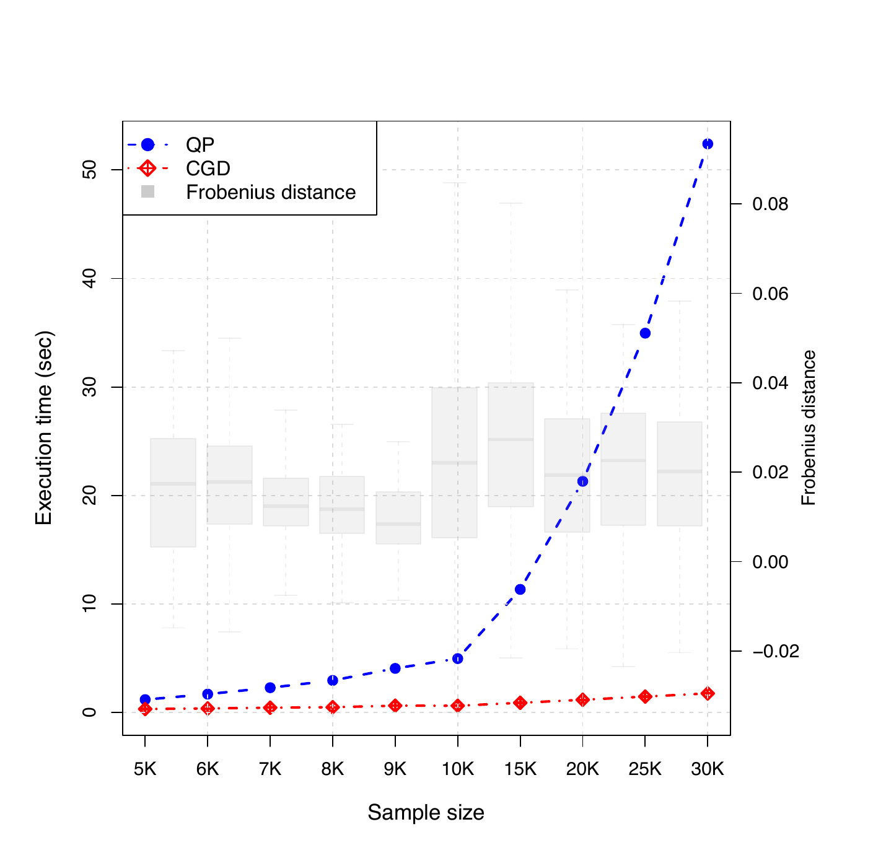
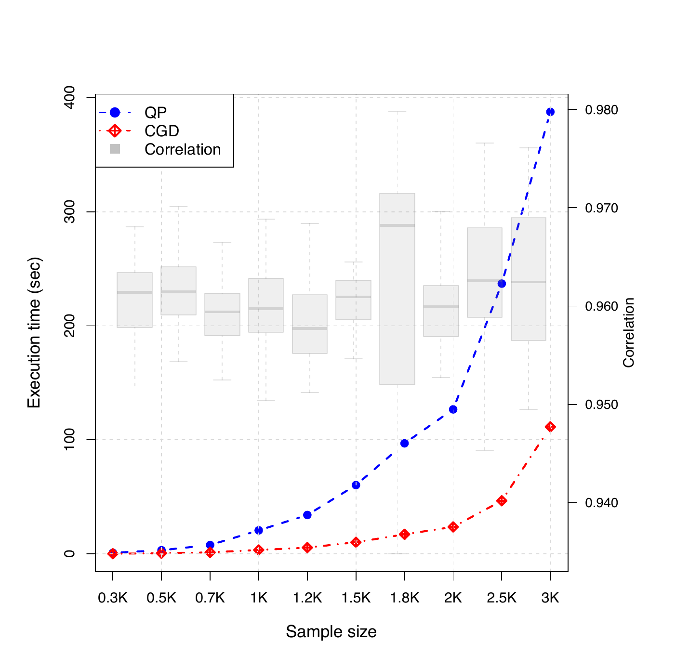
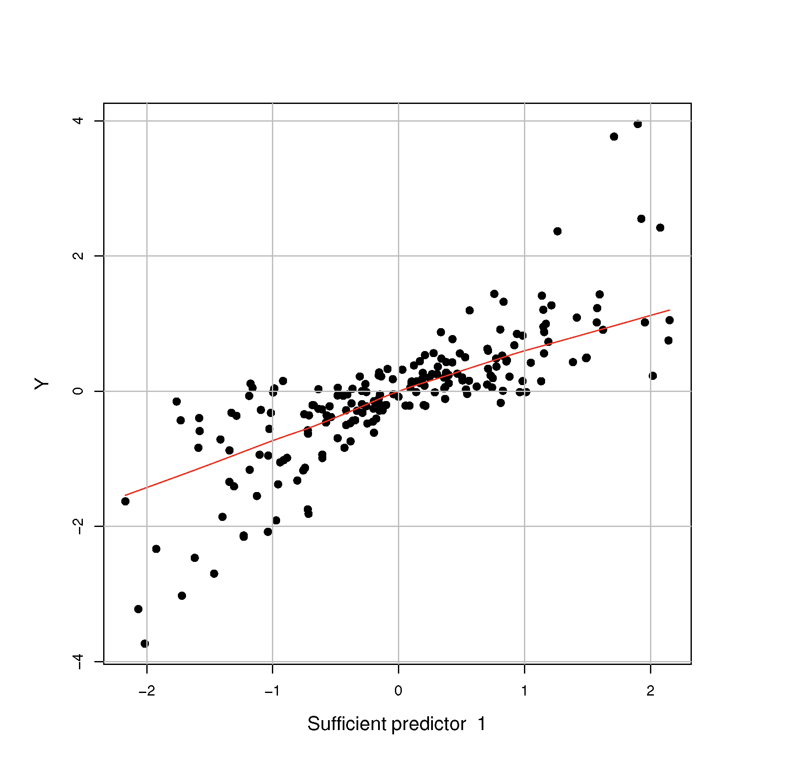
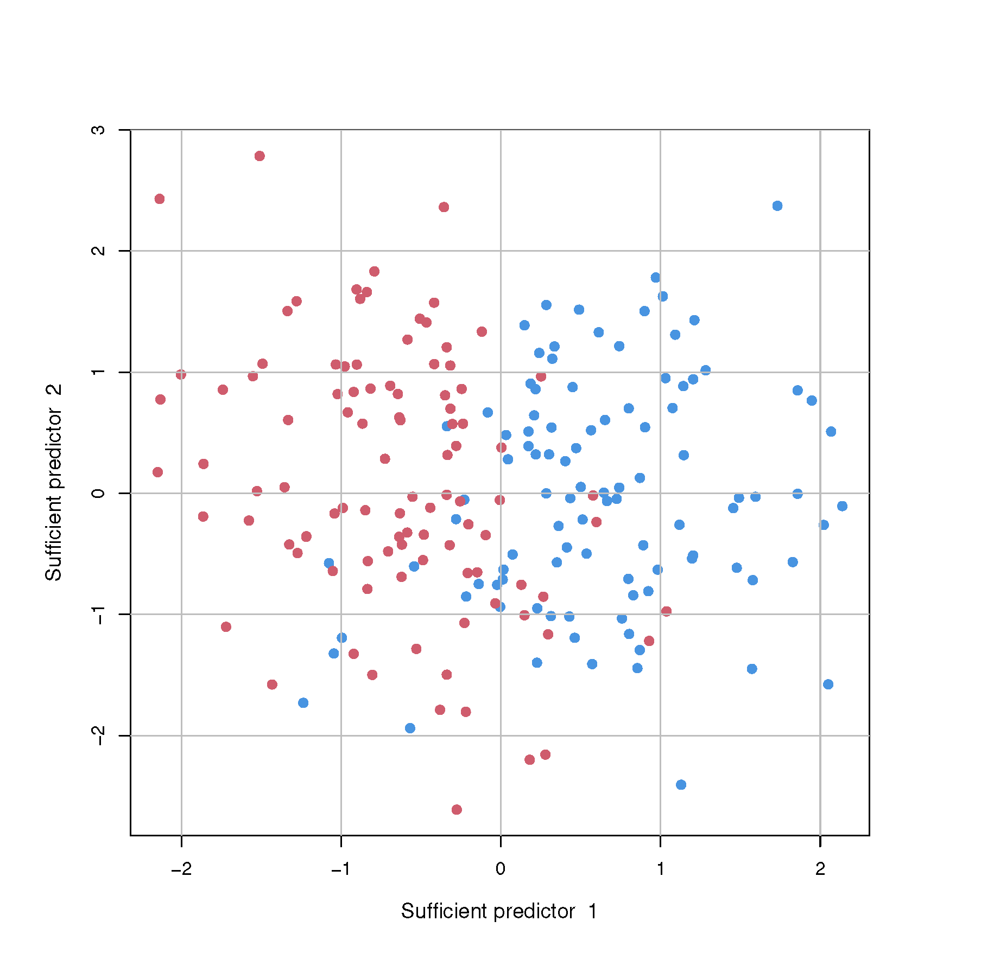
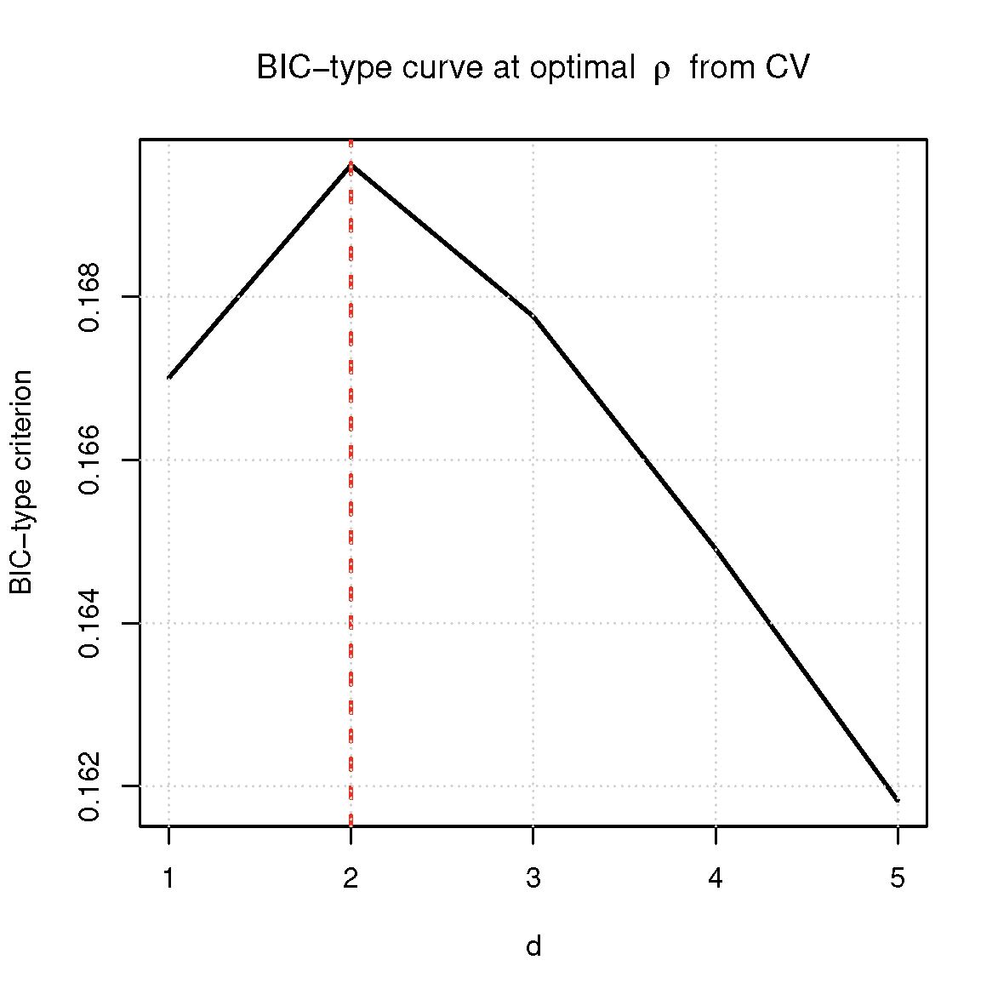
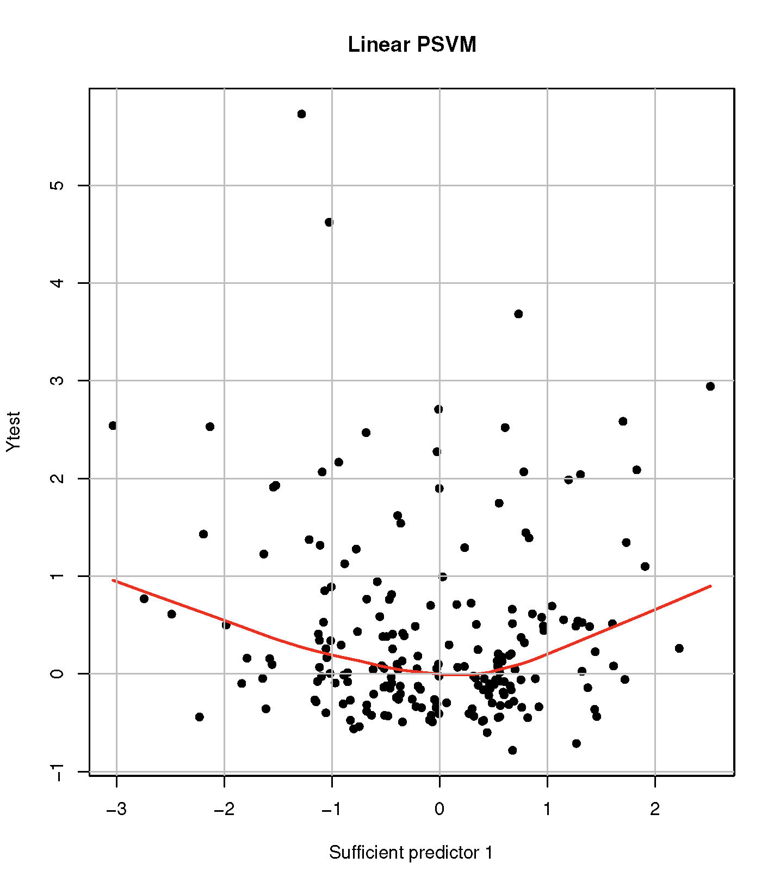
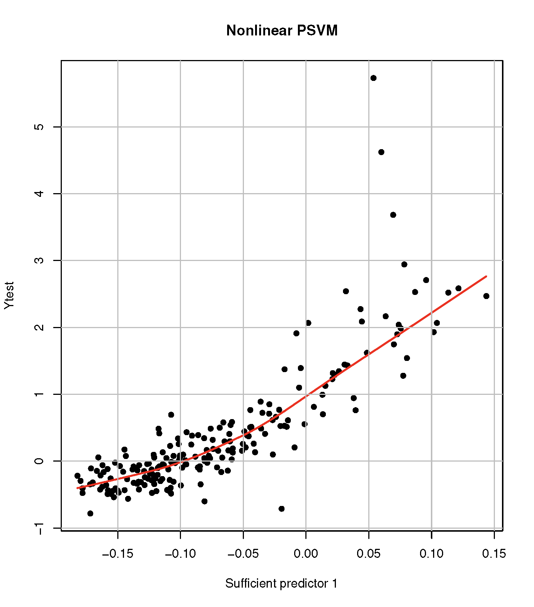
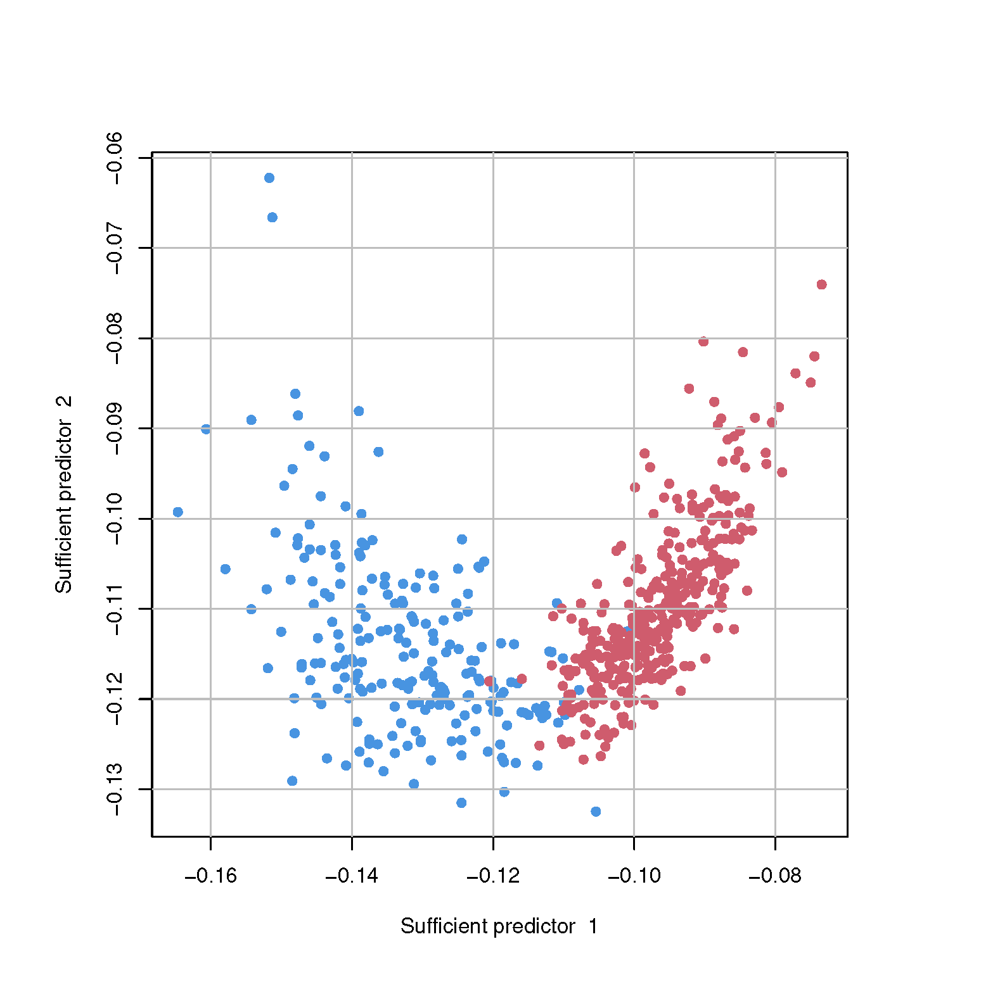
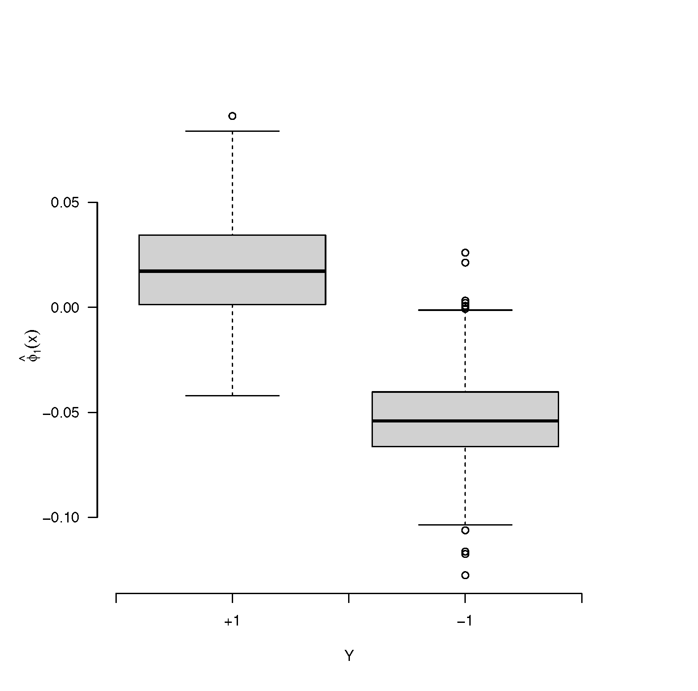

Sufficient dimension reduction (SDR), which seeks a lower-dimensional subspace of the predictors containing regression or classification information, has been popular in a machine learning community. In this work, we present a new R software package psvmSDR that implements a new class of SDR estimators, which we call the principal machine (PM) generalized from the principal support vector machine (PSVM). The package covers both linear and nonlinear SDR and provides a function applicable to realtime update scenarios. The package implements the descent algorithm for the PMs to efficiently compute the SDR estimators in various situations. This easy-to-use package will be an attractive alternative to the dr R package that implements classical SDR methods.
Dimension reduction is essential in modern applications in statistics and machine learning as the data size grows. In this regard, the sufficient dimension reduction (SDR, Li, 1991; Cook, 1998) has gained great popularity in supervised learning problems. For a given pair of univariate response \(Y\) and \(p\)-dimensional predictor \(\mathbf{X}\), SDR assumes \[\begin{equation} \label{eqn:linear_model} Y \perp \mathbf{X} \mid \mathbf{B}^{\top} \mathbf{X}, \end{equation} \tag{1}\] where \(\perp\) denotes statistical independence. Under (1), SDR seeks the minimal space spanned by \(\mathbf{B}\in \mathbb{R}^{p \times d}\), called the central subspace, and denoted by \(\mathcal{S}_{Y\mid \mathbf{X}}\) that contains complete regression information of \(Y\) on \(\mathbf{X}\). We assume \(\mathcal{S}_{Y\mid \mathbf{X}}= \text{span}\{\mathbf{B}\}\) in (1). The dimension of \(\mathcal{S}_{Y\mid \mathbf{X}}\), \(d\) is also an important quantity to be estimated from the data.
There are numerous SDR estimators to estimate \(\mathcal{S}_{Y\mid \mathbf{X}}\). Earliest proposals are based on an inverse moment, such as sliced inverse regression (SIR, Li, 1991) and sliced average variance estimates (SAVE, Cook and Weisberg, 1991). Other methods are based on forward regression models, including principal Hessian directions (pHd, Li, 1992) and minimum average variance estimation (MAVE, Xia et al., 2002). Several R packages are available for the practical implementation of these classical SDR methods. The dr package (Weisberg, 2015), for instance, concisely implements many of these techniques (e.g., SIR, SAVE, pHd). Other packages such as itdr (De Alwis et al., 2024) and orthoDr (Zhu et al., 2019) also provide functions for various SDR approaches.
The assumption (1) is often called a linear SDR. Cook (2007) generalized (1), and proposed a nonlinear SDR that pursues a function \(\phi: \mathbb{R}^p \rightarrow \mathbb{R}^d\) satisfying \[\begin{equation} \label{eqn:nonlinear_model} Y \perp \mathbf{X} \mid \phi(\mathbf{X}). \end{equation} \tag{2}\] Nonlinear SDR methods have been developed by directly extending the classical inverse methods to Reproducing Kernel Hilbert Space (RKHS, Aronszajn, 1950). However, there is no hands-on R package that implements them.
Meanwhile, Li et al. (2011) proposed the principal support vector machine (PSVM), a unified framework for both linear and nonlinear SDR, by connecting the SDR problem to the support vector machine (SVM, Vapnik, 1999). More importantly, PSVM can be easily generalized to other supervised machine learning approaches other than the SVM with the hinge loss. We call the class of SDR methods that generalizes the PSVM the principal machine (PM, Shin and Shin 2024). The PM methods, such as PSVM as well as principal quantile regression (PQR, Wang et al., 2018), principal least squares SVM (PLSSVM, Artemiou et al., 2021), and principal asymmetric \(L_2\) regression (PALS, Soale and Dong 2022), have reportedly outperformed classical SDR approaches.
In this article, we develop an R package
psvmSDR that renders a
simple gradient descent algorithm to compute a wide variety of the PMs
in a unified framework. The package offers two main functions psdr()
and npsdr() that compute a wide variety of PMs for linear and
nonlinear SDR, respectively. In addition, it also has a function
rtpsdr() that executes the realtime SDR estimation for streamed data.
We highlight the main advantages of the package psvmSDR in the following.
It can solve both linear and nonlinear SDR problems in a unified framework using a simple and efficient gradient descent algorithm.
It can be applied to a binary classification, where most inverse-moment-based approaches suffer.
It can compute a PM estimator with a user-specified arbitrary convex loss, adding flexibility to the methods.
It can handle streamed data by directly updating the SDR estimator without storing the entire data.
The package is now available from CRAN at https://cran.r-project.org/web/packages/psvmSDR and can be installed from R with the following command:
> install.packages("psvmSDR")The rest of the article is organized as follows. In Section
2, we introduce
the principal machine (PM) under a linear, nonlinear, and realtime SDR
framework along with the corresponding functions psdr(), npsdr(),
and rtpsdr(). In Section 3, we describe computational details about the
package, and its efficiencies are investigated. In Section
4, we
overview the package structure and explain how to implement the
functions with examples. We conclude with a summary and discussion in
Section 6.
We start by introducing the PSVM (Li et al. 2011). For a given sequence of \(c_1 < c_2 < \cdots < c_h\), the PSVM minimizes the following objective function in the population level: \[\begin{equation} \label{eqn:model} (\alpha_{k}, \boldsymbol{\beta}_{k}) = \mathop{\rm argmin}_{\alpha, \boldsymbol{\beta}} \boldsymbol{\beta}^{\top} \boldsymbol{\Sigma}\boldsymbol{\beta}+ \lambda \mathbb{E}\left[\tilde{Y}_k \{\alpha + \boldsymbol{\beta}^{\top} (\mathbf{X}- \boldsymbol{\mu})\}\right]_+, \quad k = 1, 2, \cdots, h, \end{equation} \tag{3}\] where \(\boldsymbol{\mu}= \mathbb{E}(\mathbf{X})\), \(\boldsymbol{\Sigma}= \text{cov}(\mathbf{X})\), and \([u]_+ = \max\{0, u\}\). Here \(\tilde{Y}_{k}\) is a pseudo-binary response, taking 1 if \(Y < c_k\) and \(-1\) otherwise, and a positive constant \(\lambda\) is a cost parameter whose choice is not overly sensitive for estimating \(\mathcal{S}_{Y\mid \mathbf{X}}\). Li et al. (2011) showed the unbiasedness of \(\boldsymbol{\beta}_{k}\), i.e., \(\boldsymbol{\beta}_{k} \in \mathcal{S}_{Y\mid \mathbf{X}}, \forall k = 1, 2, \cdots, h\).
It is important to note that convexity of the objective function in (3) is the only requirement for the PSVM to be unbiased, and this naturally leads to a generalized version of the PSVM, which we call the PM. We can categorize the PM into two types: one is response-based PM (RPM), and the other is loss-based PM (LPM). The RPM obtains multiple solutions by perturbing the pseudo-response \(\tilde Y_k\), while the loss function remains unchanged. The PSVM belongs to this category. On the other hand, the LPM calculates multiple solutions by changing the loss functions, while the pseudo-response \(Y_k\) is fixed as \(Y\) for all \(k\). The principal weighted support vector machine (PWSVM, Shin et al., 2017) and the principal quantile regression (PQR, Wang et al., 2018) are the earliest proposals of the LPM.
The linear PM solves \[\begin{align} \label{eqn:pm} (\alpha_{k}, \boldsymbol{\beta}_k) = \mathop{\rm argmin}_{\alpha, \boldsymbol{\beta}} \boldsymbol{\beta}^\top \boldsymbol{\Sigma}\boldsymbol{\beta}+ \lambda \mathbb{E}\left[L_{k} \left\{\tilde Y_k, f(\mathbf{X})\right\} \right], \qquad k = 1, 2, \cdots h, \end{align} \tag{4}\] where \(f(\mathbf{X}) = \alpha + \boldsymbol{\beta}^\top (\mathbf{X}- \boldsymbol{\mu})\) and \(L_k(y, f)\) denotes a convex loss function of a margin, \(yf\) for a binary \(y \in \{-1, 1\}\) or residual \(y - f\) for a continuous \(y \in \mathbb{R}\). The RPM solves (4) for different values of \(\tilde Y_k\) over \(k\) to obtain multiple solutions while keeping \(L_k\) fixed as, say, \(L\). On the other hand, the LPM solves it with different loss functions \(L_k\) while a pseudo-response \(\tilde Y_k\) remains fixed as the original response \(Y\). For instance, PWSVM, the first proposal under the LPM framework, solves (4) using the loss function \(L_k(y, f) = \pi_k(y)[1 - yf]_+\), where \(\pi_k(y) = c_k\) if \(y = 1\), and \(\pi_k(y) = 1 - c_k\) otherwise, for a given \(c_k \in (0,1)\) while \(\tilde Y\) is fixed as \(Y \in \{-1, 1\}\). The PWSVM is proposed for SDR in binary classification problems, addressing the limitations of PSVM when the dimensionality \(d > 1\).
Given \((y_i, \mathbf{x}_i), i = 1, 2, \cdots, n\), the sample counter part of (4) is
\[\begin{equation}
(\hat{\alpha}_k, \hat{\boldsymbol{\beta}}_k) = \mathop{\rm argmin}_{\alpha, \boldsymbol{\beta}} \boldsymbol{\beta}^{\top} \hat{\boldsymbol{\Sigma}}\boldsymbol{\beta}+ \frac{\lambda}{n} \sum_{i=1}^{n}L_k\left(\tilde y_{k,i}, \alpha + \boldsymbol{\beta}^\top \mathbf{z}_i \right), \qquad k = 1, 2, \cdots h,
\end{equation} \tag{5}\]
where \(\mathbf{z}_i = \mathbf{x}_i - \sum_{i=1}^{n}\mathbf{x}_i/n\) and
\(\hat{\boldsymbol{\Sigma}}= n^{-1}\sum_{i=1}^{n}\mathbf{z}_i \mathbf{z}_i^\top\)
denotes a sample covariance matrix. The PM working matrix is then
\[\begin{equation}
\hat{\mathbf{M}} = \sum_{k=1}^h \hat{\boldsymbol{\beta}}_{k} \hat{\boldsymbol{\beta}}_{k}^{\top},
\end{equation} \tag{6}\]
and its first \(d\) eigenvectors of \(\hat{\mathbf{M}}\) estimate
\(\mathbf{B}\) under (1), where \(d\) denotes the
dimension of \(\mathcal{S}_{Y\mid \mathbf{X}}\), often called the
structural dimension. The
psvmSDR package offers
psdr() function to compute the linear PM estimates with a given loss
function.
In the linear SDR, it is also crucial to estimate the structural
dimension \(d\). The linear PM employs the following BIC-type criterion
proposed by Li et al. (2011) to estimate \(d\):
\[\begin{equation}
\label{eqn:structure dimension}
\hat{d}=\underset{d \in\{1, \cdots, p\}}{\operatorname{argmax}} \sum_{j=1}^{d} v_{j}-\rho \frac{d \log n}{\sqrt{n}} v_{1},
\end{equation} \tag{7}\]
where \(v_{1} \geq \cdots \geq v_{p} (p > d)\) are eigenvalues of
\(\hat{\mathbf{M}}\) in (6), with \(\rho\) being a
hyperparameter that can be chosen in a data-adaptive manner. The
psvmSDR package
contains psdr_bic() function for estimating \(d\) based on
(7).
There are numerous PMs by employing a variety of convex loss functions in supervised learning problems. For RPMs, the principal logistic regression with negative log-likelihood loss (PLR, Shin and Artemiou, 2017), the principal \(L_q\)-SVM with \(L_q\) hinge loss (\(L_q\)-PSVM, Artemiou and Dong 2016), and the principal least square SVM with the squared loss (PLSSVM, Artemiou et al., 2021) are proposed. For LPMs, Wang et al. (2018) suggested the principal quantile regression (PQR) with the check loss, Kim and Shin (2019) proposed the principal weighted logistic regression (PWLR), Soale and Dong (2022) introduced the principal asymmetric least square regression (PALSR) with the asymmetric least square loss, and Jang et al. (2023) proposed the principal weighted least square SVM (PWLSSVM).
Table 1 provides a complete list of PMs implemented in psvmSDR with the corresponding loss functions.
| Type | Method | Response | Margin (Residual) | Loss | loss |
|---|---|---|---|---|---|
| RPM | SVM | \(Y \in \mathbb{R}\) | \(m_k = \tilde Y_k f\) | \({[1-m_k]}_+\) | svm |
| Logistic | \(\tilde{Y}_k = \mathbb{1}\{Y \ge c_k\}\) | \(\log(1 + e^{-m_k})^{-1}\) | logit |
||
| \(L_2\)-SVM | \(\quad~~ - \mathbb{1}\{Y < c_k\}\) | \(\{[1-m_k]_+\}^2\) | l2svm |
||
| LS-SVM | \([1-m_k]^{2}\) | lssvm |
|||
| LPM | WSVM | \({Y = \tilde Y_k \in \{-1,1\}}\) | \(m = Yf\) | \(\pi_{k}(Y)[1-m]_+\) | wsvm |
| Wlogistic | \(\pi_{k}(Y)\log(1 + e^{-m})^{-1}\) | wlogit |
|||
| W\(L_2\)-SVM | \(\pi_{k}(Y)\{[1-m]_+\}^2\) | wl2svm |
|||
| WLS-SVM | \(\pi_{k}(Y)[1-m]^{2}\) | wlssvm |
|||
| Quantile | \({Y = \tilde Y_k \in \mathbb{R}}\) | \(r = Y - f\) | \(r \{c_k - I(r<0)\}\) | qr |
|
| Asym. LS | \(r^2 \{c_k - I(r<0)\}\) | asls |
A nonlinear generalization of (4) under (2) is \[\begin{equation} \label{model:non_pm_population} (\alpha_{0,k}, g_{0,k}) = \mathop{\rm argmin}_{\alpha \in \mathbb{R}, g \in \mathcal{H}} \text{var} \{\psi(\mathbf{X})\}+\lambda \mathbb{E}\left[ {L}_k \left\{ \tilde{Y}_{k}, f(\mathbf{X}) \right\} \right], \qquad k = 1, 2, \cdots, h, \end{equation} \tag{8}\] where \(f(\mathbf{X})=\alpha+g(\mathbf{X})-\mathbb{E}\{g(\mathbf{X})\}\) with \(g\) being a function in a Hilbert space \(\mathcal{H}\) of functions of \(\mathbf{X}\). Let \((\alpha_{0,k}, g_{0,k})\) be the minimizer of (8), then \(g_{0,k}(\mathbf{X})\) is necessarily a function of the sufficient predictor \(\phi(\mathbf{X})\) in (2) and its unbiasedness for the nonlinear SDR is established by Li et al. (2011).
Employing the reproducing kernel Hilbert space (RKHS) generated by a positive definite kernel \(K(\cdot, \cdot)\) for the space of \(g\), we have the following finite-dimensional basis representation of \(g\): \[\begin{align} g(\mathbf{x}) = \sum_{j=1}^b \beta_j \left\{\psi_{j}(\mathbf{x})- \bar{\psi}_j \right\} \end{align} \tag{9}\] with \[\begin{align} \psi_j(\mathbf{x})=\left\{\mathbf{k}(\mathbf{x})\right\}^{\top} \mathbf{q}_j / \lambda_j, \quad j=1, \cdots b, \qquad and \qquad \bar{\psi}_j = \sum_{i=1}^{n}\psi_{j}\left(\mathbf{x}_{i}\right)/n, \end{align} \tag{10}\] where \(\mathbf{k}(\cdot)=\{K(\cdot, \mathbf{x}_i) : i=1,\ldots,n\}^{\top}\), and \(\mathbf{q}_j\) and \(\lambda_j\) are the \(j\)th leading eigenvector and eigenvalue of the centered kernel matrix \(\mathbf{K} = \{K_{ij}\} \in \mathbb{R}^{n\times n}\) with \(K_{ij} = K(\mathbf{x}_i, \mathbf{x}_j) - \sum_{k = 1}^n K(\mathbf{x}_k, \mathbf{x}_j)/n\). We refer Section 6 of Li et al. (2011) for the theoretical justification for (9) and (10). In psvmSDR, we employ the radial/Gaussian kernel and set \(b = n/3\) as recommended by Li et al. (2011).
By employing (9), the sample counter part of
(8) is
\[\begin{equation}
(\hat{\alpha}_k, \hat{\boldsymbol{\beta}}_k) = \mathop{\rm argmin}_{\alpha, \boldsymbol{\beta}} {\boldsymbol{\beta}}^{\top} \hat{\boldsymbol{\Sigma}}{\boldsymbol{\beta}}+\frac{\lambda}{n}
\sum_{i=1}^{n} L_{k} \left( \tilde{y}_{k,i}, \alpha + {\boldsymbol{\beta}}^{\top} \mathbf{z}_{i} \right), \qquad k = 1, 2, \cdots, h,
\end{equation} \tag{11}\]
where \(\mathbf{z}_i = \sum_{j=1}^b \psi_{j}(\mathbf{x}_i)- \bar \psi_j\)
and
\(\hat{\boldsymbol{\Sigma}}= n^{-1} \sum_{i=1}^{n}\boldsymbol{\mathbf{z}}_i \boldsymbol{\mathbf{z}}_i^{\top}\).
We note that this kernel PM in (11) is also
linear in the parameter, exactly the same as the linear PM
(5). For a given \(\mathbf{x}\), one can compute the
sufficient predictors,
\(\hat{\phi}(\mathbf{x})=\hat{\mathbf{V}}^{\top}\left\{ \psi_1(\mathbf{x}), \ldots, \psi_b(\mathbf{x})\right\}^{\top}\),
where \(\hat{\mathbf{V}}\) denotes the \(d\)-leading eigenvectors of
\(\sum_{k=1}^h \hat{\boldsymbol{\beta}}_{k} \hat{\boldsymbol{\beta}}_{k}^{\top}\).
The psvmSDR package
offers npsdr() function to compute the nonlinear PM estimates.
When data is collected in a streamed fashion, it is prohibitive to use all data to compute the SDR estimator due to memory constraints. Therefore, it is important to develop real-time SDR algorithms that directly update the SDR estimators without storing the entire data. In this regard, Artemiou et al. (2021) proposed PLSSVM which solves (4) with the squared loss \(L(\tilde y, f) = (1 - \tilde y f)^2\).
Let’s consider the following scenario. In addition to the currently available (old) data \(\mathbb{D}_{\texttt{O}} = (y_i, \mathbf{x}_i), i = 1, 2, \cdots, n\), suppose \(m\) additional (new) data \(\mathbb{D}_{\texttt{N}} = (y_i, \mathbf{x}_i), i = n+1, \cdots, n+m\) arrives. Let \(\mathbb{D}_{\texttt{W}} = \mathbb{D}_{\texttt{O}} \cup \mathbb{D}_{\texttt{N}}\) denote the whole data. The subscripts \(\texttt{O}, \texttt{N}\), and \(\texttt{W}\) are used to denote the quantities related to old, new, and whole data, respectively. Artemiou et al. (2021) showed that the PLSSVM solution for the whole data, \({\mathbf{r}}_{\texttt{W}} = (\hat{\alpha}_{\texttt{W}},\hat {\boldsymbol{\beta}}_{\texttt{W}}^\top)^\top\in \mathbb{R}^{p+1}\), is given by \[\begin{align} \label{eqn:rtpsdr_coef} \mathbf{r}_{\texttt{W}} = \{\mathbf{I}- \mathbf{A}_{\texttt{O}}^{-1} \mathbf{B}_{\texttt{N}} (\mathbf{I}+ \mathbf{A}_{\texttt{O}}^{-1} \mathbf{B}_{\texttt{N}})^{-1} \} ( \mathbf{r}_{\texttt{O}} + \mathbf{A}_{\texttt{O}}^{-1}\mathbf{c}_{\texttt{N}} ), \end{align} \tag{12}\] where \(\mathbf{r}_{\texttt{O}}\) is the solution for \(\mathbb{D}_{\texttt{O}}\), and \(\mathbf{A}_{\texttt{O}}^{-1} \in \mathbb{R}^{{(p+1)}\times {(p+1)}}\) is also computable from \(\mathbb{D}_{\texttt{O}}\), while \(\mathbf{B}_{\texttt{N}} \in \mathbb{R}^{{(p+1)}\times {(p+1)}}\) and \(\mathbf{c}_{\texttt{N}} \in \mathbb{R}^{p+1}\) are computable from \(\mathbb{D}_{\texttt{N}}\). That is, one can directly update \(\mathbf{r}_{\texttt{W}}\) from \(\mathbf{r}_{\texttt{O}}\) without storing the entire \(\mathbb{D}_{\texttt{O}}\), but \(\mathbf{A}_{\texttt{O}}\) only. We remark that \(\mathbf{A}_{\texttt{W}}\) can be directly updated from \(\mathbf{A}_{\texttt{O}}\) and the new data, and its computational complexity does not depend on the size of \(\mathbb{D}_\texttt{O}\). We refer Section 3 of Artemiou et al. (2021) for the exact forms of these quantities.
The psvmSDR package
offers rtpsdr() that implements the realtime SDR using PLSSVM for a
continuous response as well as PWLSSVM by Jang et al. (2023) for a
binary response.
In this section, we describe computational details about psdr() and
npsdr() in psvmSDR.
Slightly abusing notation as
\(\boldsymbol{\beta}^\top = \left(\alpha, \boldsymbol{\beta}^\top\right)\)
and \(\mathbf{z}_i^\top = \left(1, \mathbf{z}_{i}^\top \right)\), the
objective functions (5) and
(11) are then rewritten as
\[\begin{align}
L(\boldsymbol{\beta}) = \boldsymbol{\beta}^\top Diag\left\{0, \hat{\boldsymbol{\Sigma}}\right\} \boldsymbol{\beta}+ \frac{\lambda}{n}\sum_{i=1}^{n}L_k\left(\tilde{y}_{k,i}, \boldsymbol{\beta}^\top \mathbf{z}_i \right).
\end{align} \tag{13}\]
We propose the coordinatewise gradient descent (CGD) algorithm to
minimize \(L(\boldsymbol{\beta})\) in (13), which updates
\(\boldsymbol{\beta}\) coordinatewisely as follows until converge:
\[\begin{align*}
\beta_j & \leftarrow \beta_j - \eta \frac{\partial L(\boldsymbol{\beta})}{\partial{\beta_j}}, ~~ j= 0, 1, 2, \cdots, p,
\end{align*}\]
where \(\eta > 0\) denotes a learning rate determined by the user. We
remark that some loss functions, such as the hinge loss and check loss
are not theoretically differentiable at most finite number of points
while numerically differentiable. In practice, the CGD implementation
ensures stable updates for non-smooth functions by employing analytical
subgradients for built-in losses (e.g., hinge, quantile) and numerical
approximations for user-defined losses. The two main functions psdr()
and npsdr() in
psvmSDR solve linear
and nonlinear PMs via this CGD algorithm, respectively, and cover a wide
variety of PM estimators by simply changing the loss functions (via
‘loss’ argument) as listed in Table
1.
The CGD algorithm is easily extended to any user-defined convex loss
function, since the corresponding derivative can be readily evaluated
numerically. Both functions can take the name of the user-defined-loss
function object as the loss argument which brings further flexibility
to the PM estimators.


Each CGD iteration costs \(\mathcal{O}(np)\) for the linear PM (psdr())
and \(\mathcal{O}(nb)\) for the nonlinear PM (npsdr()), where \(p\) is the
data dimension and \(b\) is the number of kernel basis functions used for
the RKHS expansion in (10) (Luo and Tseng 1992; Friedman
et al. 2007). Following the empirical recommendation of Li et al.
(2011), we set \(b\) between \(n/3\) and \(2n/3\) in practice. In contrast,
quadratic programming (QP) approaches for SVM-like objectives (e.g.,
kernlab) have
worst-case polynomial time \(\mathcal{O}(n^{3}p^{3})\) (or
\(\mathcal{O}(n^{3}b^{3})\) for kernel PMs) (Platt 1998; Cristianini and
Shawe-Taylor 2000), which scale less favorably as \(n\) grows.
To evaluate the computational efficiency of the proposed CGD algorithm,
we compare its computing times for both linear and nonlinear (kernel)
PSVM estimators to ipop() function in
kernlab, a standard QP
solver for the SVM over 100 independent repetitions. A toy data is
generated from the following regression model:
\[\begin{align}
\label{model_regression_1}
y_i = x_{i1} / \left\{0.5+\left(x_{i2} + 1\right)^2\right\} + 0.2\epsilon_i,
\end{align} \tag{14}\]
where both \(x_{ij}\) and \(\epsilon_i\) are i.i.d. random samples from
\(N(0,1)\) for \(i = 1, \cdots, n\) and \(j = 1, 2, \cdots, 5\). Different
sample sizes \(n\) are considered from \(5,000\) to \(30,000\) for linear PSVM
while from \(300\) to \(3,000\) for the kernel PSVM where the parameter
dimension depends on \(n\).
Figure 3 highlights the computational advantage of the CGD implementation, which achieves substantially lower runtimes than QP. In addition to runtime, we assessed estimation agreement. For the linear PSVM, we measured subspace similarity via the Frobenius distance between projection matrices, \(|{\mathbf{P}}_{\mathrm{CGD}} - {\mathbf{P}}_{\mathrm{QP}}|_F\), where \({\mathbf{P}} = \hat{\mathbf{B}}(\hat{\mathbf{B}}^{\top}\hat{\mathbf{B}})^{-1}\hat{\mathbf{B}}^{\top}\). For the kernel PSVM, predictive agreement is quantified by the correlation between fitted test responses, \(\mathrm{cor}(\hat{y}_{\mathrm{QP}}, \hat{y}_{\mathrm{CGD}})\), where \(\hat{y}_{\mathrm{QP}}\) and \(\hat{y}_{\mathrm{CGD}}\) are obtained from regressions of \(y\) on the estimated sufficient predictors \(\hat{\phi}_{\mathrm{QP}}(\mathbf{X})\) and \(\hat{\phi}_{\mathrm{CGD}}(\mathbf{X})\). Across all sample sizes, the Frobenius distance remained near zero and the correlation close to one, confirming that CGD achieves accuracy indistinguishable from QP while being substantially faster.
The psvmSDR package is
organized to allow users to run different types of PM methods in a
unified fashion by calling just a few interface functions. Several
auxiliary codes are then internally called to perform computations
according to the options specified in those interface functions. The
overall design of
psvmSDR adopts the
functional object-oriented programming approach (Chambers 2014) with
S3 classes and methods. Every function in the package is either a
wrapper that creates a single instance of an object or a method that can
be applied to a class object.
The package can be installed and loaded in an R session via:
> install.packages("psvmSDR")
> library("psvmSDR")The main functions in the package are psdr() and npsdr(). These are
designed to be analogous to linear and nonlinear principal sufficient
dimension reduction methods, respectively. Each function returns an S3
object, ‘psdr’ and ‘npsdr’, respectively. Also, compatible S3
methods plot() and print() let the users enjoy the result of
dimension reduction through familiar generic functions. Moreover, some
explicit methods of which are related to the main functions are also
provided, such as psdr_bic() and npsdr_x().
A function rtpsdr() implements the PLSSVM in a realtime fashion
(Artemiou et al. 2021; Jang et al. 2023) discussed in
Section 2.3.
Table 2 summarizes the main functions along with their
compatible methods. In the following subsections, we demonstrate the
general usage of the main functions and methods of
psvmSDR by the S3
class of the function.
| Function | Description | Class | Compatible methods |
|---|---|---|---|
psdr() |
Basic function for applying linear PMs with various loss functions | psdr |
psdr_bic()plot.psdr()print.psdr()summary.psdr() |
rtpsdr() |
Real-time sufficient dimension reduction through principal (weighted) least squares SVM | ||
npsdr() |
Basic function for applying kernel PMs with various loss functions | npsdr |
npsdr_x()plot.npsdr()print.npsdr()summary.npsdr() |
S3 class ‘psdr’A function psdr() provides a unified interface for all linear PMs
solved by the CGD algorithm. The following arguments are used (some are
mandatory) when calling psdr() function and they must be provided in
the order that follows:
> psdr <- function(x, y, loss = "svm", h = 10, lambda = 1, eps = 1e-5, max.iter = 100,
eta = 0.1, mtype = "m", plot = FALSE) x: input matrix; each row is an observation vector. x should have
2 or more columns.
y: response vector, either can be continuous or \(\{1, -1\}\)-coded
binary variable.
loss: name of loss function objects listed in Table
1,
or the name of a user-defined (convex) loss function object.
h: unified control for slicing or weighting; either a positive
integer (number of slices/weights) or a numeric vector of cutpoints in
\((0,1)\).
lambda: cost parameter.
eps: stopping criterion of the CGD algorithm.
max.iter: maximum iteration number of the CGD algorithm.
eta: learning rate for the CGD algorithm.
mtype: a margin type, which is either margin ("m") or residual
("r") (See, Table 1). Only needed when a user-defined loss is used.
The default is "m".
plot: boolean. If TRUE, scatter plots of \(Y\) and sufficient
predictors will be presented.
The main function psdr() returns an object with S3 class ’psdr’
including
evalues: eigenvalues of the estimated working matrix
(6).
evectors: eigenvectors of the estimated working matrix
(6).
fit: metadata (n, p, hyperparameters, per-slice
iteration/convergence info, etc.).
To further illustrate how to use function psdr(), we reuse the toy
example which is formulated in (14) with
\(n=200\).
> set.seed(100)
> n <- 200; p <- 5
> x <- matrix(rnorm(n*p, 0, 1), n, p)
> y <- x[,1]/(0.5 + (x[,2] + 1)^2) + 0.2 * rnorm(n) We then can apply the PSVM (Li et al. 2011) using function psdr() with
calling the argument loss = "svm" (default value) as below:
> obj <- psdr(x, y)
> summary(obj)
=== Summary of psdr Object ===
Loss function: svm
Sample size (n): 200 | Variables (p): 5 | Response type: continuous
Lambda: 1 | Eta: 0.1 | Eps: 1e-05 | Max.iter: 100
--- Eigen Decomposition of Working Matrix (M) ---
Top eigenvalues (up to 10):
[1] 0.7803 0.0451 0.0070 0.0013 0.0002
Estimated Eigenvectors (columns = central subspace basis):
[,1] [,2] [,3] [,4] [,5]
[1,] 0.9963 0.0003 -0.0069 0.0792 0.0328
[2,] 0.0020 -0.9578 0.1250 -0.1082 0.2352
[3,] -0.0189 -0.2385 0.1258 0.5707 -0.7754
[4,] -0.0451 0.1507 0.7675 0.4600 0.4178
[5,] 0.0708 0.0553 0.6159 -0.6669 -0.4096
--- Per-slice diagnostics ---
slice iter converged obj
1 1 46 TRUE 6.468460e-06
2 2 46 TRUE 6.112350e-06
3 3 45 TRUE 5.661422e-06
4 4 46 TRUE 4.309816e-06
5 5 45 TRUE 4.690990e-06
6 6 45 TRUE 5.603063e-06
7 7 45 TRUE 6.321184e-06
8 8 46 TRUE 5.886324e-06
9 9 46 TRUE 6.368887e-06
Convergence summary:
Total iterations: 410 | All slices converged: TRUE The output eigenvectors correctly estimate the true basis vectors
\(\left(1, 0, 0, 0, 0\right)^{\top}\) and
\(\left(0, 1, 0, 0, 0\right)^{\top}\). The summary() function returns a
summary of a psdr object. More detailed usage of the function and its
arguments is provided in the package manual. The method plot.psdr()
creates the scatter plots between response and the \(j\)-th sufficient
predictors.
> plot(obj, d=1, lowess=TRUE)
plot.psdr().
The argument obj is the object from the function psdr() which
contains information on estimated \(\mathcal{S}_{Y\mid \mathbf{X}}\). The
number of sufficient predictors to be plotted is specified by the
argument d whose default value is 1. By default, a locally weighted
scatterplot smoothing (LOWESS) curve is plotted, unless lowess=FALSE
is specified. The argument "\(\ldots\)" allows for additional
arguments to be passed to generic plot() function such as main,
cex, col, lty, and etc.
Now, we generate binary response \(\tilde y_i = \operatorname{sign}(y_i)\)
from (14) to illustrate the PWSVM (Shin et al.
2017), an example of the LPM. One can apply PWSVM by letting
loss = "wsvm".
> y.binary <- sign(y)
> obj_wsvm <- psdr(x, y.binary, loss = "wsvm")
> print(obj_wsvm)
> plot(obj_wsvm) --- Principal Sufficient Dimension Reduction (linear) ---
Loss: wsvm | n: 200 p: 5 | Response: binary
Lambda: 1 | Eta: 0.1 | Max.iter: 100 | Converged: TRUE
Eigenvalues (first 5): 0.3864, 0, 0, 0, 0
Eigenvectors (columns are SDR directions):
[,1] [,2] [,3] [,4] [,5]
[1,] 0.9938 -0.0392 0.0572 0.0000 0.0869
[2,] 0.0590 0.8544 -0.0892 -0.4531 -0.2308
[3,] -0.0181 -0.4386 -0.2064 -0.8624 0.1449
[4,] 0.0201 0.1295 -0.8786 0.2124 0.4071
[5,] 0.0903 -0.2437 -0.4174 0.0762 -0.8674Figure 3 visualizes the classification performance with only two sufficient predictors estimated by PWSVM. With only two sufficient predictors, the two classes are well separated.

loss="wsvm".
One of many advantages of psdr() is that it can adopt any convex
user-defined loss function in addition to existing choices listed in
Table 1. A basic syntax of the arbitrary loss function
follows:
loss_name <- function(u, ...){ body of a function }Argument u is a variable of a function (any character is possible) and
any additional parameters of the loss function can be specified via
... argument. For example, one can define "mylogistic" and apply
it to the function psdr() by specifying loss="mylogistic".
> mylogistic <- function(u) log(1+exp(-u))
> obj_mylogistic <- psdr(x, y, loss="mylogistic")
> print(obj_mylogistic) --- Principal Sufficient Dimension Reduction (linear) ---
Loss: mylogistic | n: 200 p: 5 | Response: continuous
Lambda: 1 | Eta: 0.1 | Max.iter: 100 | Converged: TRUE
Eigenvalues (first 5): 0.0337, 0.0011, 3e-04, 1e-04, 0
Eigenvectors (columns are SDR directions):
[,1] [,2] [,3] [,4] [,5]
[1,] 0.9948 -0.0845 0.0499 0.0214 -0.0143
[2,] -0.0910 -0.9651 0.1157 0.0039 -0.2165
[3,] -0.0001 -0.2001 0.0673 -0.3248 0.9219
[4,] -0.0444 0.1015 0.9337 0.3331 0.0712
[5,] -0.0070 -0.1054 -0.3285 0.8849 0.3128As aforementioned,
psvmSDR provides a
function psdr_bic() that implements the BIC-type criterion in
(7). Here, \(\rho\) serves as a tuning
parameter. To determine its optimal value, psdr_bic employs a \(K\)-fold
cross-validation procedure that selects the \(\rho\) yielding the most
stable dimension estimates across folds.
Following arguments are mandatory when calling the psdr_bic():
psdr_bic <- function(obj, rho_grid = seq(0.001, 0.05, length = 10), cv_folds = 5,
plot = TRUE, seed = 123, ...)obj: the output object from the main function psdr()
rho_grid: numeric vector of candidate \(\rho\) values; the default is
seq(0.001, 0.05, length = 10).
cv_folds: number of cross-validation folds used for stability
evaluation (default = 5).
plot: Boolean. If TRUE, the plot of BIC values is depicted.
seed: random seed for reproducibility.
\(\cdots\): additional arguments to be passed to generic plot().
The function psdr_bic() returns an object with S3 class ’psdr_bic’
containing
rho_star: the selected tuning parameter \(\rho\) that minimizes the
cross-validated variation of dimension estimates.
d_hat: the estimated structural dimension corresponding to
rho_star.
G_values: a matrix of BIC-type criterion values evaluated over
candidate \(\rho\) values.
cv_variation: the variation (variance) of estimated dimensions
across CV folds, used as a stability measure.
fold_dhat: the estimated dimensions obtained from each CV fold.
The following code demonstrates the use of psdr_bic(), which by
default visualizes the BIC-type criterion curves as shown in
Figure 4.
> d.hat <- psdr_bic(obj, rho_grid=seq(0.05, 0.1, length=5), cv_folds=5)
> print(d.hat)
$rho_star
[1] 0.05
$d_hat
[1] 2
$G_values
[,1] [,2] [,3] [,4] [,5]
[1,] 0.1670058 0.1662087 0.1654117 0.1646147 0.1638176
[2,] 0.1696176 0.1680236 0.1664295 0.1648354 0.1632414
[3,] 0.1677601 0.1653690 0.1629779 0.1605868 0.1581957
[4,] 0.1649097 0.1617216 0.1585334 0.1553453 0.1521572
[5,] 0.1618201 0.1578349 0.1538497 0.1498645 0.1458794
$cv_variation
rho=0.0500 rho=0.0625 rho=0.0750 rho=0.0875 rho=0.1000
0.0 0.2 0.3 0.3 0.0
$fold_dhat
rho=0.0500 rho=0.0625 rho=0.0750 rho=0.0875 rho=0.1000
[1,] 2 2 2 2 1
[2,] 2 2 2 2 1
[3,] 2 1 1 1 1
[4,] 2 2 1 1 1
[5,] 2 2 2 1 1
attr(,"class")
[1] "psdr_bic"
psdr_bic() with plot = TRUE.
S3 class ‘npsdr’The function npsdr() is a nonlinear version of psdr that implements
kernel PMs. A function npsdr() receives the following arguments:
> npsdr(x, y, loss="svm", h = 10, lambda = 1, b = floor(n/3), eps = 1.0e-5, mtype="m",
max.iter = 100)All input arguments are identical to those for psdr() except b which
denotes the number of basis functions on RKHS in (10).
The function npsdr() returns an object with S3 class "npsdr" that
contains the following.
evalues: eigenvalues of the estimated working matrix in
(6).
evectors: eigenvectors of the estimated working matrix in
(6).
The kernel information is stored internally and is not explicitly
returned unless forced to print the object named obj.psi.
To further illustrate how to use function npsdr(), we use the
following model used in (Li et al. 2011):
\[\begin{align}
\label{model_regression_2}
y_i = 0.5\left(x_{i1}^2 + x_{i2}^2 \right)^{1/2} \log\left(x_{i1}^2 + x_{i2}^2 \right) + 0.2\epsilon_i, \quad i=1,\ldots,200.
\end{align} \tag{15}\]
Following code is for demonstrating kernel PSVM using function
npsdr().
> set.seed(100)
> n <- 200; p <- 5
> x <- matrix(rnorm(n*p, 0, 1), n, p)
> y <- 0.5*sqrt((x[,1]^2+x[,2]^2))*(log(x[,1]^2+x[,2]^2))+ 0.2*rnorm(n)
> obj_kernel <- npsdr(x, y, max.iter = 200, eta = 0.8, plot = FALSE)
> print(obj_kernel) $evalues
[1] 1.724557e+02 2.108836e+01 7.665943e+00 3.202983e+00 2.171408e+00
[6] 1.608822e+00 1.029958e+00 ...
$evectors
[,1] [,2] [,3] [,4] ... ...
[1,] -0.0068922070 -0.0373206692 -0.180768482 -0.031654139 ... ...
[2,] 0.1642382375 -0.0793322112 -0.084408595 -0.190419815 ... ...
... ... ... ... ... ...
[ reached getOption("max.print") -- omitted 51 rows ]Beside the main function, npsdr_x() computes the estimated sufficient
predictors
\(\hat{\phi}(\mathbf{x})=\hat{\mathbf{V}}_n^{\top}\left\{ \psi_1(\mathbf{x}), \ldots, \psi_b(\mathbf{x})\right\}^{\top}\)
in (2) for a given \(\mathbf{x}\). The usage of a
function npsdr_x() is given below.
> set.seed(200)
> new.x <- matrix(rnorm(n*p, 0, 1), n, p)
> new.y <- 0.5*sqrt((new.x[,1]^2+new.x[,2]^2))*(log(new.x[,1]^2+new.x[,2]^2))
+ + 0.2*rnorm(n)
> reduced_data <- npsdr_x(object = obj_kernel, newdata = new.x, d = 2) The arguments object is the object from the result of npsdr(), and
newdata is a new data matrix. The argument d is for the number of
sufficient predictors and its default value is 2. In the final line of
the code above, npsdr_x() computes \(\hat\phi(\mathbf{x})\), the
nonlinear dimension reduction of new.x under
(2) using kernel PSVM estimates.
Note that the regression function (15) is symmetric about the origin. In such a scenario, linear PMs do not work and the kernel PM would be an attractive alternative. Figure 5 depicts the scatter plots of the response and the first sufficient predictor estimated by (a) the linear PSVM and (b) the kernel PSVM. As expected, the linear PSVM fails to find the central subspace when the regression function is symmetric about the origin, while the nonlinear PSVM still efficiently identifies sufficient predictors and captures the linear trend.


‘rtpsdr’The package psvmSDR
also provides rtpsdr() for the realtime SDR using squared loss
(Artemiou et al. 2021; Jang et al. 2023), and its usage is given below.
> rtpsdr(x, y, obj = NULL, h = 10, lambda = 1)x: covariate matrix of a new data.
y: response vector of a new data.
obj: the output object from rtpsdr() for the old data that
contains the PM solutions and matrices for the old data. If it is not
given, psdr() with the squared loss (PLSSVM) is to be applied to the
given data, y and x to obtain the PM solutions and the matrices.
The PWLSSVM is applied if y is binary.
h: unified control for slicing or weighting; either a positive
integer (number of slices/weights) or a numeric vector of cutpoints in
\((0,1)\).
lambda hyperparameter for the loss function. The default is set to
0.1.
rtpsdr() returns an object S3 class ‘psdr’ that includes
evalues: eigenvalues of the estimated working matrix in
(6).
evectors: eigenvectors of the estimated working matrix in
(6).
r: the PLSSVM/PWLSSVM solutions \({\mathbf{r}}\) given in
(12).
A: updated matrix \(\mathbf{A}\) for the realtime update in
(12).
A returned object from rtpsdr() stores the state of the algorithm at
each iteration \(t\). This object is passed to the function as an argument
and is returned at each iteration \(t+1\) containing the state of the
model parameters at that step.
The following command is an example of rtpsdr() under the streamed
data scenario. The data are collected in a batch-wise manner with the
batch size of \(m = 500\).
> set.seed(1234)
> p <- 5
> m <- 500 # batch size
> N <- 10 # number of batches
> obj <- NULL
> for (iter in 1:N){
+ x <- matrix(rnorm(m*p), m, p)
+ y <- x[,1]/(0.5 + (x[,2] + 1)^2) + 0.2 * rnorm(m)
+ obj <- rtpsdr(x = x, y = y, obj = obj)} # Real time Update
> round(obj$evectors, 3)
[,1] [,2] [,3] [,4] [,5]
[1,] 1.000 0.005 -0.005 -0.007 0.007
[2,] 0.005 -0.999 0.037 0.011 0.013
[3,] -0.006 -0.003 -0.474 0.323 0.819
[4,] -0.006 -0.038 -0.768 -0.606 -0.206
[5,] 0.006 -0.014 -0.430 0.727 -0.535For binary classification, rtpsdr() computes PWLSSVM solution (Jang et
al. 2023). We note that rtpsdr() returns psdr object and thus
print.psdr() and plot.psdr() are applicable.
This section presents a more in-depth data analysis using the package
psvmSDR. We
demonstrate the application of the psdr() and npsdr() functions on
two publicly available datasets: the Boston housing data and the
Wisconsin diagnostic breast cancer data.
We apply the proposed methods to Boston housing data (Harrison Jr and Rubinfeld 1978), which is available on the R package mlbench. There are 13 predictors along with 506 observations, and the response variable \(Y\) () is the median of owner occupied homes in the Boston Standard Metropolitan Statistical Areas in \(\$1,000\). Some predictors are explained below: per capita crime rate by town (), the proportion of residential land zoned for lots over 25,000sq.ft (), nitricoxides concentration (), etc. Two categorical variables are removed, both and . Previous research on the data (Chen and Li 1998) claimed to remove observations corresponding to a crime rate greater than 3.2 for the purpose of building a better model. In the end, we used 374 observations. We excluded \(X_4\) in the following analysis, which represents houses with tract bounds the Charles River. The data dimension ends up to \((Y, \mathbf{X})={\mathbf{\mathbb{R}}} \times {\mathbf{\mathbb{R}}}^{12}\).
We can load data BostonHousing as follows:
> data("BostonHousing", package = "mlbench")
> attach(BostonHousing)
> BostonHousing <- BostonHousing[BostonHousing$crim < 3.2 , -c(4,9)]
> X <- as.matrix(BostonHousing[,-12])
> Y <- BostonHousing[,"medv"]Then, we apply PSVM to the data as follows:
> set.seed(1)
> rslt <- psdr(X, Y)After fitting the data, we visualize regression relationships between response and predictors projected onto the estimated \(\mathcal{S}_{Y\mid \mathbf{X}}\).
> lsvm <- rslt$evectors
> x.lsvm <- X %*% lsvm
> plot(x.lsvm[,1], Y, type = "p", xlab = expression(hat(b)[1]^T*X), ylab="medv")
> lines(lowess( x.lsvm[,1], Y), col="red", lwd=2)
> plot(x.lsvm[,2], Y, type = "p", xlab = expression(hat(b)[2]^T*X), ylab="medv")
> lines(lowess(x.lsvm[,2], Y), col="blue", lwd=2)psdr() function.
Through PSVM, the original 12-dimensional data is reduced to two-dimensional data via linear transformation through \(\hat{\mathbf{B}}\). In Figure 6, we are able to claim that the relationships between 1st and 2nd sufficient predictors and \(Y\) look almost linear.
Then, we can apply psdr_bic() function to determine the structural
dimension \(d\).
> bic_boston <- psdr_bic(rslt, rho_grid=seq(0.005, 0.05, length=5), cv_folds=5)
> print(bic_boston$rho_star)
[1] 0.01625
> print(bic_boston$d_hat)
[1] 2We use the Wisconsin Diagnostic Breast Cancer (WDBC) data which is
available on UCI Machine Learning Repository
(https://archive.ics.uci.edu/dataset/17/breast+cancer+wisconsin+diagnostic).
The dataset contains diagnoses of breast cancer for 569 patients with 32
predictors. We assume \({d} =2\) for the purpose of visualization. We
analyze both linear and nonlinear SDR cases via psdr() and npsdr(),
respectively. We first load data from the repository as follows:
> wisc <- read.table("http://archive.ics.uci.edu/ml/machine-learning-databases/
breast-cancer-wisconsin/wdbc.data", sep = ",")
> x.wisc <- matrix(unlist(wisc[,-c(1,2)]), ncol = 30)
> y.wisc <- 2*as.numeric(as.factor(unlist(wisc[,2]))) - 3First, we apply principal weighted logistic regression (PWLR) for the
binary response by setting loss = "wlogit". Specifying plot = TRUE
generates a scatterplot of sufficient predictors that are projected onto
the estimated \(\mathcal{S}_{Y\mid \mathbf{X}}\).
> psdr(x.wisc, y.wisc, loss = "wlogit", h = 20, lambda = 0.1, eta = 0.5, plot = TRUE)Figure 7a displays that two classes are well separated in the estimated \(\mathcal{S}_{Y\mid \mathbf{X}}\) which has only 2 dimensions.
Second, as a nonlinear approach, we apply the WDBC data to kernel PWLR
(Shin et al. 2017) using npsdr() function with loss=‘wlogit’. We
employ a Gaussian kernel, with the bandwidth determined by the median of
the pairwise Euclidean distances between predictors. The number of
slices which is the same as h is set to 20. The number of basis
functions for a kernel trick is set to k=floor(length(y)/3).
> nonlinear.obj <- npsdr(x.wisc, y.wisc, loss = "wlogit", h = 20, lambda = 5, eta = 1,
max.iter = 30, plot = FALSE)In the code below, npsdr_x() computes \(\hat\phi(\mathbf{x})\) under
(2) using nonlinear.obj estimates.
> x.nsvm <- npsdr_x(nonlinear.obj, newdata = x.wisc, d = 2)We illustrate how the two classes are well classified by the first sufficient predictor, \(\hat{\phi}_1(\mathbf{x})\), using boxplots.
> boxplot(x.nsvm[y.wisc == 1,1], x.nsvm[y.wisc != 1,1], xlab = "Y", axes = F,
ylab = expression(hat(phi)[1](x)))
> axis(1, seq(0.5, 2.5, by = 0.5), c(NA, "+1", NA, "-1", NA)); axis(2, las = 1)The kernel PWLR performs well, as shown in Figure 7b, where the two classes are clearly separated by \(\hat{\phi}_1(\mathbf{x})\).


In this article, we introduced and tutored the R software package psvmSDR, by unifying linear and nonlinear SDR under the principal machine (PM) framework. The package emphasizes its practical and convenient utilities through simple and user-friendly code syntax and access to various PMs. The use of gradient descent for computation ensures efficiency and scalability, particularly beneficial in large-scale datasets. Moreover, the package offers a realtime update scheme for batch-wise data collection scenarios. The psvmSDR invites researchers and practitioners in R communities to explore and use the powerful tools for the principal sufficient dimension reduction in their work.
The results in this paper were obtained using R 4.4.1 with the package psvmSDR 3.0.1. It is possible to have different simulation results depending on which linear algebra package is installed and which version of R is used.
Seung Jun Shin is supported by the National Research Foundation of Korea grants (2022M3J6A1063595 and 2023R1A2C1006587) funded by the Korea government (MSIT), and by Korea University (K2521221). Seung Jun Shin is a corresponding author.
dr, itdr, orthoDr, psvmSDR, kernlab, mlbench, psvmSDR 3.0.1
AnomalyDetection, Cluster, MachineLearning, NaturalLanguageProcessing, Optimization
This article is converted from a Legacy LaTeX article using the texor package. The pdf version is the official version. To report a problem with the html, refer to CONTRIBUTE on the R Journal homepage.
Text and figures are licensed under Creative Commons Attribution CC BY 4.0. The figures that have been reused from other sources don't fall under this license and can be recognized by a note in their caption: "Figure from ...".
For attribution, please cite this work as
Shin, et al., "psvmSDR: An R Package for a Unified Algorithm for Sufficient Dimension Reduction via Principal Machines", The R Journal, 2026
BibTeX citation
@article{RJ-2026-037,
author = {Shin, Jungmin and Shin, Seung Jun and Artemiou, Andreas},
title = {psvmSDR: An R Package for a Unified Algorithm for Sufficient Dimension Reduction via Principal Machines},
journal = {The R Journal},
year = {2026},
note = {https://doi.org/10.32614/RJ-2026-037},
doi = {10.32614/RJ-2026-037},
volume = {18},
issue = {3},
issn = {2073-4859},
pages = {1}
}